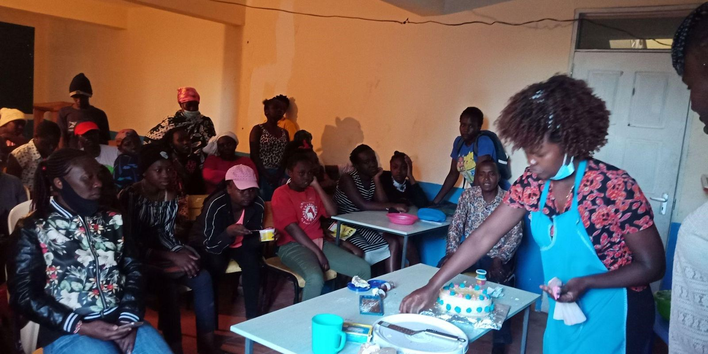

Clean water
Clean water
Families
Nilinde Project
Helping orphans and vulnerable children in Kibera by making their families stronger and more self-reliant.
Led by YDF, the Nilinde Project improves the lives of orphans and vulnerable children (OVCs) in Nairobi’s informal settlements, especially Kibera.
The challenge
Many of these children face poverty, the impact of HIV/AIDS, and poor access to school and health care. Nilinde connects them with the services they need, and supports the caregivers who look after them.
What we do
- For children: school supplies, counselling and help getting legal identity documents
- For caregivers: training in financial literacy, business and parenting
- For families: savings groups, access to microfinance and links to jobs
Results so far
More than 1,200 children have been supported and over 300 caregivers trained. The goal is stable, self-sufficient households that can care for and protect their children for the long term.
In pictures
Support Nilinde Project
Give by M-Pesa or bank transfer in a few minutes, or talk to us about partnering on this project.
More projects
All projectsClean water Peacebuilding
PeacebuildingJumuia Zalendo
Read more about Jumuia Zalendo Digital skills
Digital skills